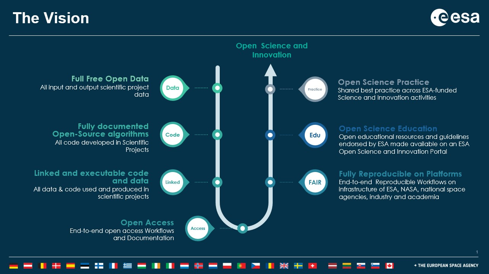

Open Science and the FAIR Principles#
Learning Objectives#
Understand what Open Science is and why we need it
Get an overview of what belongs to Open Science
Get to know the FAIR principles
Why do we need Open Science#

Video content in collaboration with Anca Anghelea (ESA) and Chelle Gentemann (NASA).
Space Agencies and International Organisations across the globe promote Open Science and support its practice by the scientific community through dedicated programmes. This course, for example, is part of the support to Earth Observation Open Science by the European Space Agency (ESA).
ESA, just like other European organisations such as the European Commission, has a long standing commitment to Open Science. A prominent example is the provision of full free and open Earth Observation data from its science missions (i.e. the Earth Explorers) and from the Copernicus Programme (e.g. the Sentinel missions). However, Open Science goes much beyond open data. ESA’s vision for Open Science covers the full research cycle (see ESA vision figure). Simply put, a piece of research fully adheres to Open Science principles if:
all the data, code, and documentation of the respective research are FAIR (see What is FAIR? section), Open and linked to one another
the research is reproducible across various platforms (i.e. cloud platforms or computational systems)
the research is maintained so that it is accessible to the community in the long-term
This requires that the scientific community adheres to the same common (or compatible) practices when writing and documenting code, preparing and sharing data or publishing their research in journals.


What is Open Science?#
Open Science#
Open Science offers new opportunities in dealing with scientific knowledge and represents a kind of cultural change. Through transparency and openness, Open Science increases the use and further development of knowledge as well as the potential for collaboration and the credibility of science. The focus is on free access to scientific processes and findings for everyone via the internet and the right to re-use this content. The beneficiaries of this concept are not only science, but also society and the economy.
Open Science is realised through various strategies and procedures, such as free access to scientific publications (Open Access), computer programmes (Open Source Software), data (Open Data) and educational materials (Open Educational Resources).

The 4 Rs of Open Science#
When opening your science think about the 4 Rs:
Reliable. It is important to evaluate the research in two ways. First with respect to scientific principles and criteria like validity, second with respect to criteria out of the professional context. This will help ensure that your results are more reliable.
Reproducible. Transparency is critical when doing research. Open Science allows you to clearly show what you’ve done to get the results you have. By being open about your methods, processes and decision making during your research, someone else doing the research again should get the same results.
Reusable. By making research results reusable, you allow others to build upon the solid foundation your research has already created in a given subject. This is the same R that is also going to be mentioned in the FAIR principles.
Relevant. Research quality describes the measurable influence of academic research on the academic community. Research impact includes environmental, cultural and societal impact, economic returns and societal benefits. By adhering to open science you increase the chances of your research to be relevant, because you give others the chance to interact with it.
The four pillars of Open Science#
The four pillars of Open Science are:
Data. Data-driven research is fast becoming the norm in all disciplines. To support validation of your findings and allow others to build upon your work, you first need to make sure that others can find your data. This means giving them persistent and unique identifiers (such as DOIs); assigning appropiate metadata so that others can find and reuse your data; putting them into a repository that supports public searching; and being clear about what others can and can’t do with them by applying an appropriate license. In the Further Reading section you find links to courses about managing and sharing research data and licensing your outputs.
Code. When sharing your software and code, be sure to make use of open source standards to support interoperability and their longer-term viability. Be sure to put your code somewhere where others can search for it and access it (e.g., Github). Additionally, you can give your code a DOI by registering your Github repo on Zenodo. You should also be clear about the license the code is being shared under. In the Further Reading section there’s a course about Open Source Software.
Papers. Open Access (OA) to publications is a key component of Open Science. Free and instant access to publications improves the speed of innovation and leads better cooperation and progress in solving grand challenges. To publish openly, you’ll need to be able to source an appropriate OA journal or discipline-specific repository and navigate your way through their publishing agreements. You should also consider sharing preprints of your work as a means of getting early feedback and community validation of your approaches. In some cases, you’ll need to pay an Article Processing Charge to publish in an OA journal.
Reviews. The peer review process is evolving. By making the peer review process more transparent, researchers have better access to peer feedback at an earlier stage in the lifecycle and consumers of research outputs can have greater confidence in their quality.
But there is way more to discover about Open Science. The Open Science Taxonomy graphic shows the different terms behind Open Science.
Further Reading#
References#
What is FAIR?#
FAIR#
In 2014, a group of researchers as well as employees of libraries, archives, publishers and funders established principles for the handling of research data in a workshop and published them on FORCE11 for reviews and comments. The so-called FAIR principles were born. They comprise four goals: the findability, accessibility, interoperability and re-usability of data. With the achievement of these goals, the sustainable re-usability of research data is meant to be guaranteed. FAIR is not binary: FAIR is a spectrum!
The OpenAIRE definition of Metadata: Metadata is data providing information about data that makes findable, trackable and (re)usable. It can include information such as contact information, geographic locations, details about units of measure, abbreviations or codes used in the dataset, instrument and protocol information, survey tool details, provenance and version information and much more. In earth observation satellite data that could be the spatial and temporal extent of the data, the sensor, the bands and their wavelenghts, etc. Section 2.1 Data Discovery and 2.2 Data Properties deal with EO metadata in particular.
Findable
The first step in (re)using data is to find them. Metadata and data should be easy to find for both humans and computers. Machine-readable metadata are essential for automatic discovery of datasets and services, so this is an essential component of the FAIRification process.
F1. (Meta)data are assigned a globally unique and persistent identifier
F2. Data are described with rich metadata (defined by R1 below)
F3. Metadata clearly and explicitly include the identifier of the data they describe
F4. (Meta)data are registered or indexed in a searchable resource
Persistent Identifier (PID): These are IDs that identify a data set, publication or software (any digital object) unambiguosly and persistently with a single link. It increases the findability of a resource drastically. A widely used identifier is the Digital Object Identifier (DOI).
Accessible
Once the users find the required data, they need to know how they can be accessed, possibly including authentication and authorisation.
A1. (Meta)data are retrievable by their identifier using a standardised communications protocol
A1.1 The protocol is open, free, and universally implementable
A1.2 The protocol allows for an authentication and authorisation procedure, where necessary
A2. Metadata are accessible, even when the data are no longer available
Interoperable
The data usually need to be integrated with other data. In addition, the data need to interoperate with applications or workflows for analysis, storage, and processing.
I1. (Meta)data use a formal, accessible, shared, and broadly applicable language for knowledge representation.
I2. (Meta)data use standards, formats and vocabularies that follow FAIR principles and allow it to be exchanged and combined across computer systems
I3. (Meta)data include qualified references to other (meta)data
Reusable
The ultimate goal of FAIR is to optimise the reuse of data. To achieve this, metadata and data should be well-described so that they can be replicated and/or combined in different settings
R1. (Meta)data are richly described with a plurality of accurate and relevant attributes
R1.1. (Meta)data are released with a clear and accessible data usage license
R1.2. (Meta)data are associated with detailed provenance
R1.3. (Meta)data meet domain-relevant community standards
Licenses: To make your data reusable the use of appropiate licenses is key. Here is a good starting point to learn about the widely used creative commons licenses.

Animated Content: FAIR (drag and drop)#
Further Reading#
Nature: A comment regarding FAIR Principles: Wilkinson, M. D. et al. (2016). The FAIR Guiding Principles for scientific data management and stewardship. Sci. Data 3:160018
European Commission: EC FAIR-Principles: European Commission. Action Plan for FAIR data recommendations, The EC expert group on FAIR data, EC/H2020 – Guidelines on FAIR Data Management in Horizon 2020
GO FAIR: GO FAIR is a bottom-up, stakeholder-driven and self-governed initiative that aims to implement the FAIR data principles, making data Findable, Accessible, Interoperable and Reusable (FAIR). It offers an open and inclusive ecosystem for individuals, institutions and organisations working together through Implementation Networks (INs). The INs are active in three activity pillars: GO CHANGE, GO TRAIN and GO BUILD.
Train-the-Trainer: Training material for “FAIR” in the train-the-trainer program for Research Data Management: Biernacka, et al. (2020). Train-the-Trainer Concept on Research Data Management (Version 3.0). Zenodo. http://doi.org/10.5281/zenodo.4071471 (p. 38)
OPENAIRE: A network of Open Access repositories, archives and journals that support Open Access policies. The OpenAIRE Consortium is a Horizon 2020 (FP8) project, aimed to support the implementation of the EC and ERC Open Access policies. https://www.openaire.eu/how-to-make-your-data-fair
Codata: FAIR-Principles and the Committee on Data for Science and Technology (Codata): The Committee on Data for Science and Technology (CODATA) is a Paris-based organization with the aim of improving the quality, reliability and accessibility of interesting data from all fields of science and technology. Hodson, S. (2018). Making FAIR data a reality… and the challenges of interoperability and reusability. Open Science Conference 2018.
FAIR Workflows: Also workflows can be made FAIR. This is a quite new topic. Here’s the workflows communities approach
History of FAIR: Information on the history of the FAIR principles
References#
Exam#
Let’s test your theoretical knowledge on open science now. It’s important that you understand these concepts. We will apply them later on in the course!
What do the 4 Rs in the context of Open Science stand for?
[( )] Readable, refreshable, recognizable, and receivable
[(X)] Reliable, reproducable, reusable, and relevant
[( )] Recitable, renameable, replicatable, and repairable.
Which statement is correct about Open Science?
[( )] Open Science sounds good, but it is unfair because researchers with limited financial means cannot afford access to open research results.
[(X)] Open Science promotes the transparency of science and the free reuse of existing research results by everyone.
[( )] Open Science ensures better networking of researchers within the EU. A worldwide exchange is currently not possible.
What are the arguments in favour of Open Data?
[( )] Generally, open data is not subject to a review process, so this type of data publication is always significantly faster.
[( )] Lower costs and less time needed to prepare the data than with a closed access publication.
[(X)] Accessibility of scientific data and metadata, source texts and digital reproductions.
FAIR is an acronym that stands for…
[(X)] Findable, Accessible, Interoperable and Reusable
[( )] Fast Artificial Intelligence Research
[( )] Fair, Accurate, Inclusive and Respectful Education
[( )] Free, Available, Implemented and Ready
Findable means…
[[X]] (Meta)data are assigned a globally unique and persistent identifier
[[ ]] (Meta)data are optimized to show up in the highest positions in google searches
[[X]] (Meta)data are registered or indexed in a searchable resource
Accessible means…
[[ ]] (Meta)data must be open.
[[X]] (Meta)data does not necessarily have to be open.
[[X]] (Meta)data has access conditions and these are clear to both humans and machines.
[[ ]] (Meta)data is open for access, but not for reuse.
Interoperable means…
[( )] (Meta)data is created and described by at least two researchers from differenct institutes
[(X)] (Meta)data use standards, formats and vocabularies that allow it to be exchanged and combined across computer systems and between humans
Reusable means…
[(X)] the data has clear usage licenses and is usable by both people and machines.
[( )] that all data is usable.
[( )] the data has clear usage licenses to be used by people.